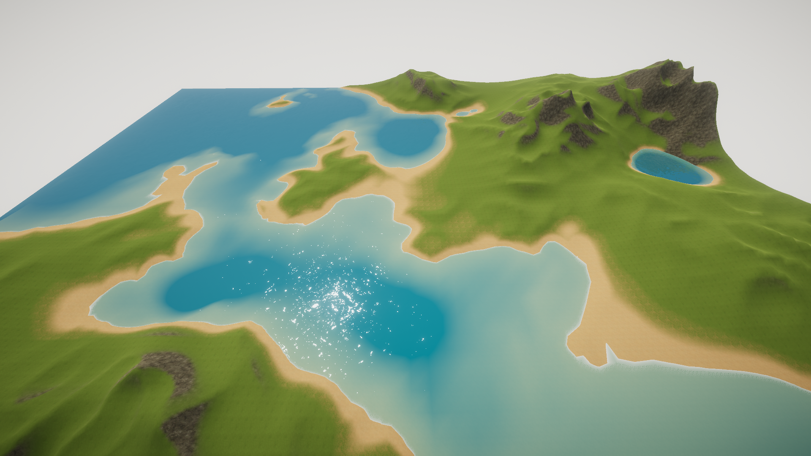

TerrainGen: Procedural Terrain Generator
Personal project
Project Description
TerrainGen is a procedural terrain generator. Multiple layers of processed perlin noise are combined to form a height map, which is applied to a mesh. Textures and terrain details are then applied to each discretized terrain cell depending on the value and gradient magnitude of the height in that cell.
Different types of noise layers are used for different types of features. For example, smooth hills are generated using simple additive noise while sharp mountain ridges are generated by processing the noise with the function f(x) = 1 - |2x-1| instead of using the noise value directly. Water and landmasses are generated using multiplicative noise layers in order to make it easier to control mountain parameters and water parameters separately.
My next goal for this project is to implement different biomes, which would affect the terrain textures and generate different flora depending on the biome. A simple approach for this would be to use perlin noise to generate humidity and heat levels in different areas and select the biome based on these values. As an extension, the biomes could also affect height features.